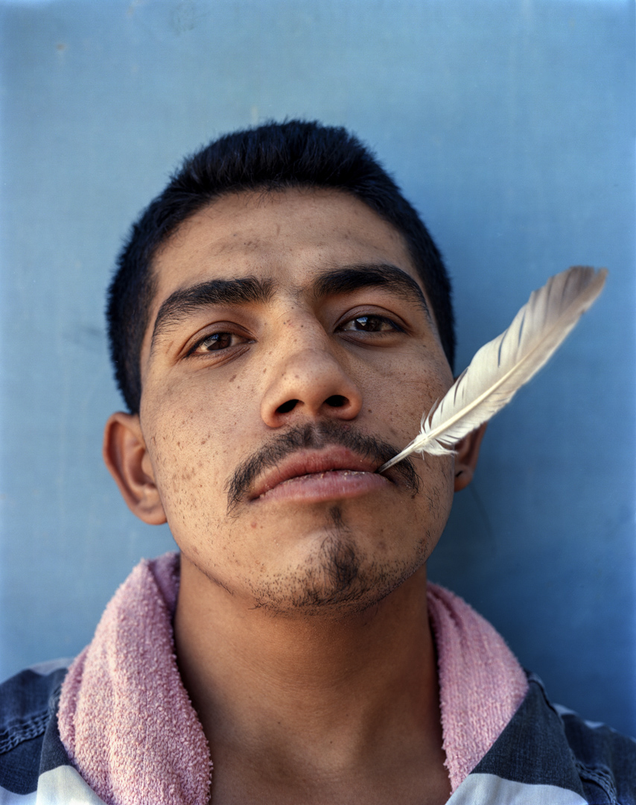
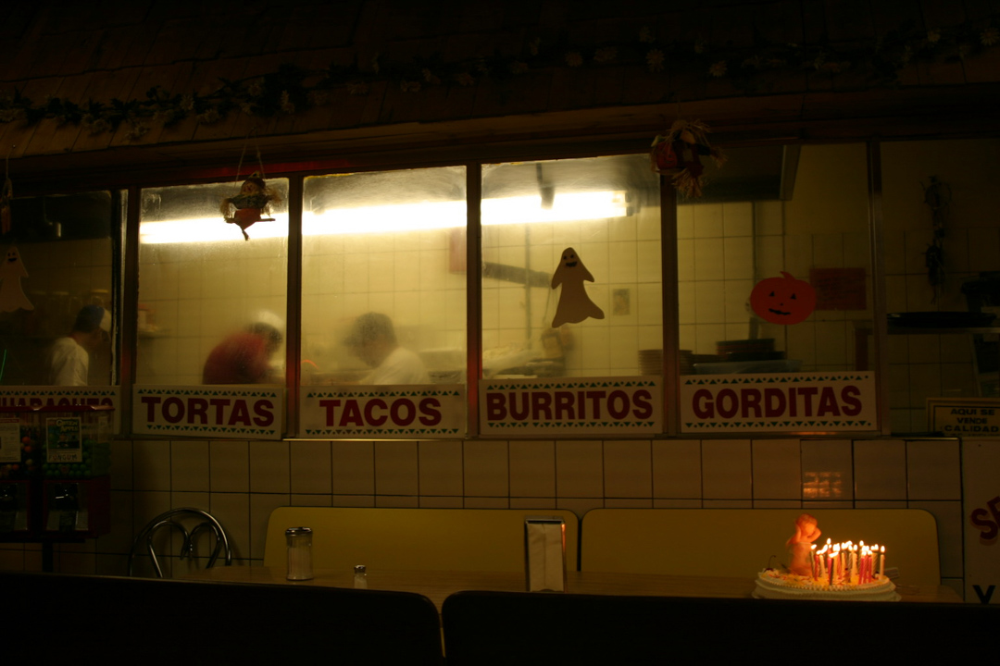

Nothing of value gets thrown away.
Sustain is Artefakt's funding engine and its clearest philosophical statement. A working materials-reuse and electronics-recycling operation is being established at the gallery at 4525 Monterey Ave NW, Calgary. Revenue funds the Fellowship, the Learn, and the archive. The logic extends in both directions: nothing of value should be thrown away — materials, memories, communities, or truth.



IT Asset Disposal
We work with regional IT asset disposal companies, property managers handling end-of-lease cleanouts, and estate sale companies in the Calgary area. If your organization has equipment leaving service, we'd like to hear from you.
Donate · Consign · Refer
Office furniture in good condition, working electronics, photographic equipment, archival materials. To discuss donation, consignment, or referral, contact jon@artefakt.foundation.